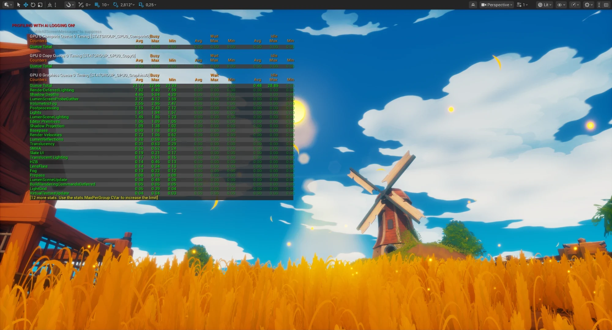
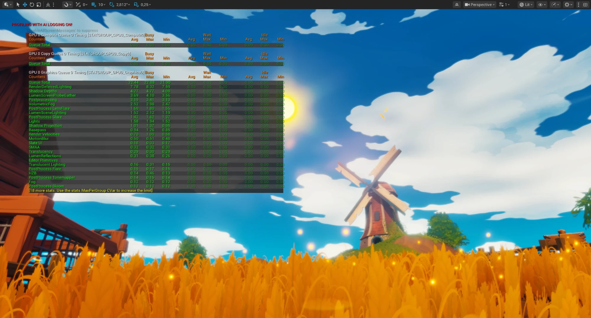
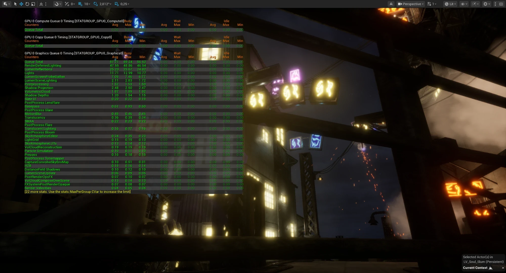
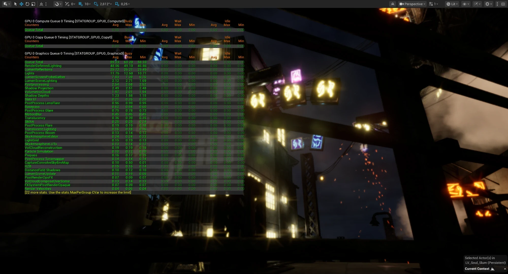

Reference
Performance
How much GPU time HLSLens takes depends mostly on how you set it up, and on the scene. In the tests below, with bloom and lens flares on, it ranged from slightly cheaper than the engine's own post-processing to about 1 ms more. Most of that range comes from one choice: the lens flare profile, and above all its glare mode. The other effects are small and cost about the same in every scene.
So instead of one number, this page shows what each effect costs, how the engine compares in two very different scenes, and how to measure it in your own project. Your hardware, resolution and scene will give different numbers. Take these as examples, not promises.
Test setup
- GPU
- GTX 1080
- Resolution
- 2560×1440, SMAA
- Measured with
stat gpuin the editor viewport, average over a few seconds with a still camera- Defaults
- ACES tonemapper, Standard bloom quality, Standard lens flare quality, unless noted
- Scenes
- Farm, a sunny stylized scene looking into the sun. Soul City, Epic's night city sample with many small lights.
Only one setting was changed at a time.
Cost per effect
Lens flares
The lens flares are by far the biggest cost, and almost all of it is the glare. In stat gpu, PostProcess LensFlare is the whole lens flare. PostProcess Glare and PostProcess Flare (ghosts and halo) are parts of it.
| Profile (glare mode) | Farm, sunny | Soul City, night |
|---|---|---|
| Classic Prime (Three Streak) | 1.60 ms, glare 1.42 | 0.60 ms, glare 0.27 |
| Diffraction Star (Diffraction Starburst) | 1.27 ms, glare 1.14 | 0.96 ms, glare 0.75 |
| Anamorphic Azure (Directional Blur) | 0.40 ms, glare 0.21 | — |
The glare cost depends a lot on the scene. Three Streak was about five times more expensive in the sunny farm than at night, because it does more work the more of the screen is bright. Diffraction Starburst changed less between the scenes, so at night it was the most expensive one. Directional Blur was the cheapest.
The rest is small. The ghosts and halo took 0.11 to 0.30 ms, a bit more in the night scene with its many separate lights. The streak of the anamorphic profile took 0.05 ms.
The Lens Flare Quality mostly changes the ghosts. With Diffraction Star in the farm scene:
| Lens Flare Quality | Lens flares | Ghosts and halo | Postprocessing total |
|---|---|---|---|
| Performance | 1.24 ms | 0.11 ms | 2.83 ms |
| Standard | 1.27 ms | 0.11 ms | 2.88 ms |
| Cinematic | 1.55 ms | 0.44 ms | 3.12 ms |
Here Performance saved very little over Standard, while Cinematic added about a quarter of a millisecond for sharper ghosts. A scene with more or bigger ghosts on screen will show a bigger difference.
Bloom
| Bloom quality | Farm | Soul City |
|---|---|---|
| Standard (default) | 0.12 ms | 0.13 ms |
| Cinematic | 0.22 ms | 0.22 ms |
Effects in the tonemapper pass
Chromatic aberration, film grain, halation, vignette, lens distortion and LUT blending all run inside the tonemapper pass, so their cost is how much that pass grows. On its own the tonemapper pass took 0.14 ms in both scenes.
| Effect | Farm | Soul City |
|---|---|---|
| Chromatic aberration, Spectral with depth | — | +0.33 ms |
| Chromatic aberration, Spectral | +0.19 ms | +0.28 ms |
| Chromatic aberration, Basic | +0.02 ms | +0.06 ms |
| Vignette | — | +0.06 ms |
| Film grain, generated | +0.03 ms | +0.06 ms |
| Film grain, 128×128 texture | — | +0.05 ms |
| LUT blending, depth-based | — | +0.05 ms |
| Lens distortion | +0.02 to 0.03 ms | — |
| Halation | about +0.01 ms | +0.02 ms |
| LUT blending, Time of Day | — | +0.01 ms |
| Perceptual tonemapper instead of ACES | — | no difference |
Chromatic aberration in Spectral mode is the most expensive effect here. Everything else adds a few hundredths of a millisecond. Values this small are close to the measurement noise, the tonemapper pass alone moves by about 0.01 to 0.03 ms between measurements.
The depth-based LUT blending result was also checked against the total: Postprocessing went from 2.28 to 2.33 ms, the same 0.05 ms the tonemapper pass grew by.
The Perceptual tonemapper and the LUT pass
The Perceptual tonemapper cost the same as ACES every frame (0.13 and 0.14 ms). Its heavy math is done in the color grading LUT pass, and that pass only runs when a color setting changes or is being blended. In a normal scene it doesn't run at all.
Overlapping volumes with different color settings make it run every frame while the player moves between them. It runs at a very low resolution, so this should still be cheap, but it is the one case where the color settings cost more than the numbers above.
Memory
Memory use is about the same as the engine's. Measured with stat RHI, with bloom and lens flares on (Diffraction Star, Standard quality):
| Memory type | Engine | HLSLens | Difference |
|---|---|---|---|
| 2D render targets | 605.96 MB | 604 MB | about 2 MB less |
| 3D render targets | 0.44 MB | 0.69 MB | 0.25 MB more |
| Structured buffers | — | — | 0.13 MB more |
Compared with the engine
The engine's default post-processing against HLSLens, both with only bloom, lens flares and the ACES tonemapper on. The numbers are the whole Postprocessing row, which includes bloom, lens flares, tonemapping and the rest of the post-process passes.
| Scene | Lens flare profile | Engine / HLSLens | Difference |
|---|---|---|---|
| Farm | Classic Prime | 2.15 / 3.19 ms | +1.04 ms (+48%) |
| Farm | Diffraction Star | 2.15 / 2.88 ms | +0.73 ms (+34%) |
| Farm | Anamorphic Azure | 2.15 / 2.08 ms | −0.07 ms (−3%) |
| Soul City | Classic Prime | 1.52 / 2.15 ms | +0.63 ms (+41%) |
| Soul City | Diffraction Star | 1.52 / 2.54 ms | +1.02 ms (+67%) |
| Soul City | Anamorphic Azure | 1.52 / 2.09 ms | +0.57 ms (+38%) |
The percentages look large because post-processing is a small part of the frame. Next to the whole frame the difference is a few percent, see the scene sections below.
Farm scene
A sunny stylized scene looking toward the sun, so there is a lot of bright sky for the glare to work with. This is close to the worst case for Three Streak glare.
| Run | Postprocessing | Whole frame (GPU) |
|---|---|---|
| Engine default | 2.15 ms | 21.77 ms |
| Classic Prime | 3.19 ms | 22.44 ms |
| Diffraction Star | 2.88 ms | 22.34 ms |
| Anamorphic Azure | 2.08 ms | 21.39 ms |




Soul City scene
Epic's Soul City sample at night: a dark city with many small neon signs and windows. Much less of the screen is bright, so Three Streak glare is cheap here, but the frame as a whole is far heavier.
| Run | Postprocessing | Whole frame (GPU) |
|---|---|---|
| Engine default | 1.52 ms | 57.71 ms |
| Classic Prime | 2.15 ms | 59.01 ms |
| Diffraction Star | 2.54 ms | 59.23 ms |
| Anamorphic Azure | 2.09 ms | — |




The screenshots show the most expensive result in each scene. Click an image to open it at full size.
Reducing the cost
- Pick the glare mode with care. It is the biggest single cost. Directional Blur is the cheapest. Three Streak gets expensive in bright scenes, Diffraction Starburst costs more in dark scenes with many lights.
- Leave unused effects at exactly 0.0. Then they don't run at all.
- Use Basic chromatic aberration if you don't need the Spectral look. It costs a fraction as much.
- Keep bloom and lens flares on Standard quality unless you can see the difference. Cinematic bloom costs about 0.1 ms more.
- Set the threshold mode to Shared when you use both bloom and lens flares.
- Avoid constantly blending volumes with different color settings if you don't need it. That keeps the LUT pass from running every frame.
Measuring it yourself
The only numbers that really count are the ones from your own scene on your target hardware.
- Open the console and type
stat gpu. - Look at the Postprocessing row for the total. The HLSLens passes show up as PostProcess LensFlare, PostProcess Glare, PostProcess Bloom, PostProcess Tonemapper and so on.
- Keep the camera still and wait a few seconds so the averages settle. Use the Avg column.
- Change one thing at a time, and compare with the same camera and the same effects turned on in the engine's Post Process Volume.
Numbers measured in the editor include some editor overhead. A packaged or Standalone build gives cleaner results.